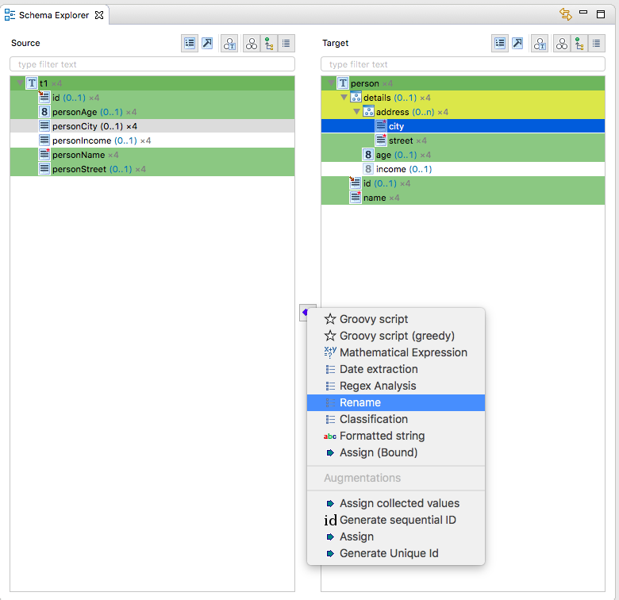
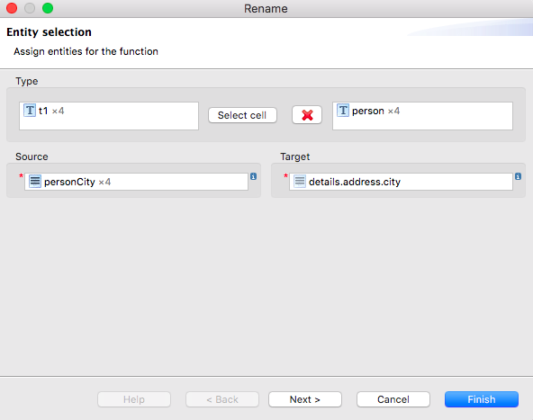

Mapping schema elements
The main purpose of HALE is of course not to just inspect
schemas, but to map the elements of these schemas with the goal of
transforming corresponding (geo)data sets.
This is done by creating mapping cells, each representing a
relation between the source and target schema. To create a new
relation, there are two options:
- Select the Add a new relation command from the Edit
menu or the application tool bar. You will then be prompted to select
the function that is applicable for the relation you want to create.
Select the schema elements you want to map in the Schema Explorer, then
click on the button Select a mapping function in the center
of the view, between source and target schemas. A menu will appear,
listing the relation types applicable for the selection. Choose the
relation type you want to create.

You can do any complex selection in the Schema Explorer, such as
selecting three elements on the source side and one element on the
target schema side. To select multiple elements, press the CTRL
button while clicking on the items. Using the CTRL button
will also allow you to deselect a schema element.
After selecting the relation type, you have to specify which
schema entities should be used for the source inputs and target
outputs defined in the relation function.

Then, depending on the relation, you may have to specify parameters
for the function, e.g. a format pattern for the Formatted
string function.